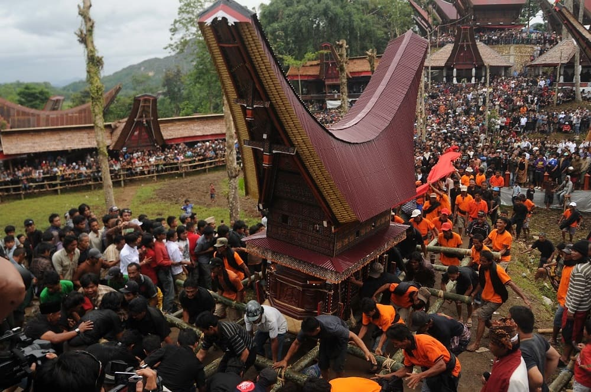

Rambu Solo adalah upacara adat pemakaman khas masyarakat Toraja di Sulawesi Selatan. Tradisi ini dianggap sebagai salah satu ritual paling sakral dan megah di Indonesia, karena bukan sekadar pelepasan jenazah, tetapi bentuk penghormatan tertinggi kepada orang yang telah meninggal. Rambu Solo' melibatkan berbagai rangkaian acara yang berlangsung berhari-hari, bahkan berminggu-minggu, tergantung status sosial keluarga.
Prosesi Rambu Solo biasanya meliputi penyembelihan kerbau dan babi sebagai simbol penghormatan dan bekal perjalanan arwah menuju Puya, alam setelah kematian dalam kepercayaan Toraja. Semakin tinggi kedudukan seseorang, semakin banyak pula hewan kurban yang dipersembahkan. Kerbau belang, atau yang dikenal dengan tedong bonga, menjadi hewan yang paling bernilai dalam ritual ini.
Selain aspek spiritual, Rambu Solo juga mencerminkan kuatnya nilai sosial masyarakat Toraja. Upacara ini menjadi momen berkumpulnya sanak keluarga dari berbagai daerah untuk mempererat hubungan dan memperkuat ikatan adat. Arsitektur tradisional Tongkonan, pakaian adat, musik, serta tarian Toraja turut mewarnai pelaksanaan ritual, menjadikannya sebuah warisan budaya yang kaya dan mengagumkan.